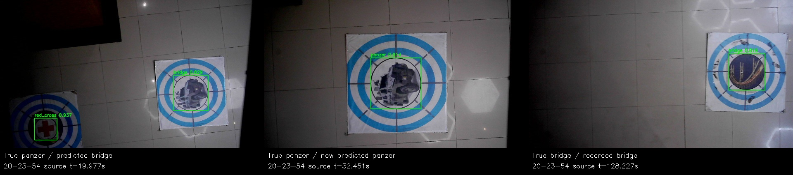
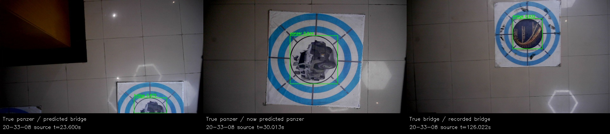

先把装甲车记作桥梁，后来真桥梁被去重
两轮原输出回放，无模型重推。桥梁ID5已确认且selected；主要缺口是低位纠正类别未更新冻结事务。图像框保留原错误类别，不能据ACK标签判断物理靶标。
完整复盘 · 最新研究策略能否应对
20-23-54
搜索local Z=1.8m；物理panzer、red_cross两投，任务账本bridge、red_cross。第三槽FREE。

高度/速度/分类图 · 轨迹图
20-33-08
搜索local Z=1.6m；物理panzer、red_cross两投，任务账本bridge、red_cross。第三槽FREE。

高度/速度/分类图 · 轨迹图